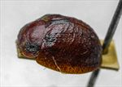
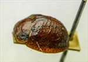
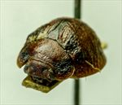
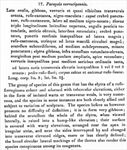

Click on images to enlarge
{kind=link}

Fig. 1. Paropsis verrucipennis type specimen, lateral view
{kind=link}

Fig. 2. Paropsis verrucipennis type specimen, lateral view
{kind=link}

Fig. 3. Paropsis verrucipennis type specimen, anterior view
{kind=link}

Fig. 4. Paropsis verrucipennis, description
Name
Paropsis verrucipennis Clark, 1865
Corresponds to
No known correspondence with any of the species codes.
Diagnosis and Notes
Blackburn does not deal with P. verrucipennis at all in his key. It is very likely that I have not seen this species.
Type specimen
Location: BMNH
Label data: /“Type”/ “Champion Bay”/ “verrucipennis”/ “Clark”/.
Carded; Size: 6.8 (L) x 5.5 (W) x 3.3 (H) mm; A-A: 1.16 mm; HCE: ~ 25.2% (estimated from a photo of lateral view).
Head, brown; pronotum brown with foveal area black; scutellum without punctures; elytra brown with elytral suture fringed with black from scutellum to greatest height, a black spot also above humeral callus, verrucae are present but are for the most part concolorous or just slightly darker than derm, many short transverse wrinkles also present. The specimen has a superficial resemblance to Ta45.
Original description
Translation of original description (Figure 4) by ChatGPT, 04/2026:
Broadly oval, gibbous, adorned with wart-like elevations and, as it were, transverse streaks, reddish-chestnut, marked with black spots. Head densely punctate, reddish-chestnut, the labrum marked with black in the middle. Thorax three times as broad as long, posterior angles rounded, anterior angles obtuse, sides rounded; densely punctate, the punctures confused and unequal, at the sides large; reddish-chestnut, with on each side a large circular spot. Scutellum somewhat heart-shaped, somewhat depressed in the middle, minutely punctate. Elytra gibbous, below the scutellum rounded and elevated, the margins slightly widened behind the middle, apex rounded; covered with unequal wart-like elevations arranged in rows behind the middle, and at the sides ornamented with 1, 2, or 3 unequal raised transverse ridges. Legs reddish-yellow; underside of body and antennae reddish-brown. Length 3 lines [~6.4 mm], width 2½ lines [~5.3 mm].
References
Clark, H. 1865, "Descriptions of new Phytophaga from Western Australia", Transactions of the Entomological Society of London, ser. 2, vol. 2, no. 5, 401–421 (page 414).
Copyright © 2026. All rights reserved.